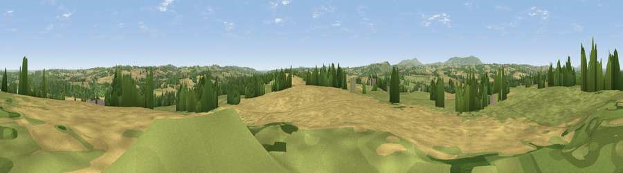

Viewpoint near Hampton Loade
#12687 in England · top 25% of its area beats it · near Hampton Loade · access?Where it is
The exact computed spot (SO 73275 85925). Click the marker for map links.
Public access: no public right of way or access land is recorded at this exact spot — it may be on private land. Computed from Natural England's CRoW access layer and OpenStreetMap rights of way — not the legal definitive map. Always verify locally.
The view, rendered

A 360° render of this exact spot computed from the terrain model, tree cover and land cover — summer colours, afternoon light, calibrated against photographs of famous viewpoints. Real trees, hedges and buildings will differ in detail.
The panorama
Grey silhouette: terrain skyline in each direction (720 bearings, Earth curvature and refraction included). Dashed green: skyline with trees (+15 m) and buildings (+8 m) as obstacles. Blue strip: how far the ground is visible on each bearing.
Where the view opens
Wedge length = distance to the farthest visible ground on that bearing (vegetation-aware). Rings at 10, 25 and 50 km.
What fills the view
42% cropland · 40% grassland · 17% woodland ·
Angular shares of the visible panorama (visual magnitude), not map area. Landscape diversity 0.48 (0–1 Shannon).
Key numbers
More beautiful places nearby
The staircase of upgrades: each row has a higher view potential than everything closer. Driving times are estimates from straight-line distance, calibrated against real road routing — check an actual route before setting out.
| Place | Direction | Drive | Score |
|---|---|---|---|
| Viewpoint near Chorley | SW · 5 km | ~11 min | 60.6 |
| Knowle Hill | SW · 6 km | ~12 min | 75.5 |
| Viewpoint near Burwarton | W · 14 km | ~25 min | 83.4 |
| Titterstone Clee | WSW · 16 km | ~28 min | 83.8 |
| Viewpoint near Little Wenlock | NNW · 24 km | ~40 min | 86.6 |
| North Hill | S · 40 km | ~59 min | 86.8 |
| Worcestershire Beacon | S · 41 km | ~60 min | 87.1 |
| Viewpoint near West Quantoxhead | SSW · 156 km | ~178 min | 87.9 |
52.47060, -2.39485 · source: screening · position refined by local search. Computed location — check access rights before visiting.